Fine-line hecho con intención, delicadeza y mucho amor.
Quiero mi tatuaje →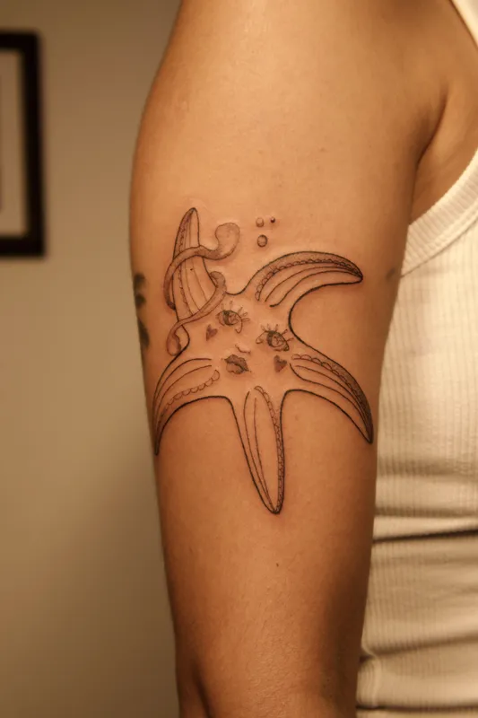
Soy tatuadora fine-line en Puerto Vallarta, y lo que más me importa no es solo el resultado final — es cómo te sientes durante el proceso.
Creo en tatuajes que se sienten como tú: suaves, detallados, hechos a tu medida. Trabajo principalmente con mujeres porque entiendo lo que significa querer algo hermoso en tu piel y sentirte cómoda mientras sucede.
No hay prisa. No hay juicios. Solo tú, yo, y el diseño que siempre quisiste.
Fine-line es difícil. No cualquiera lo hace bien.
Llevo 3 años perfeccionando este estilo — y se nota.
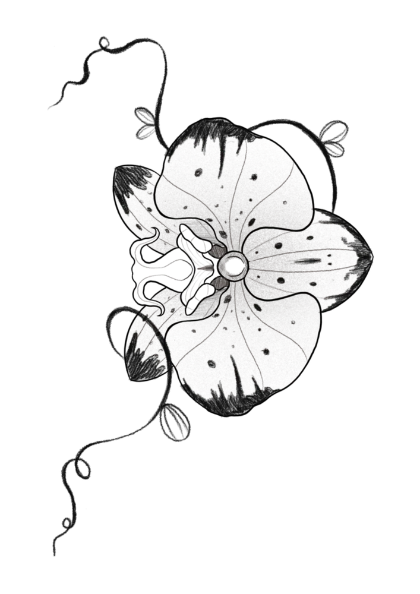
Cada pieza es única. Cada línea, intencional.
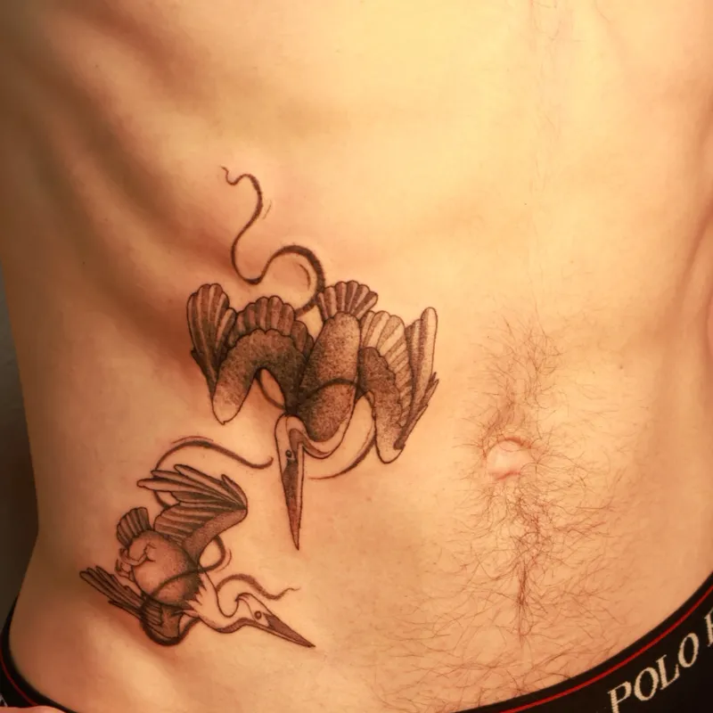
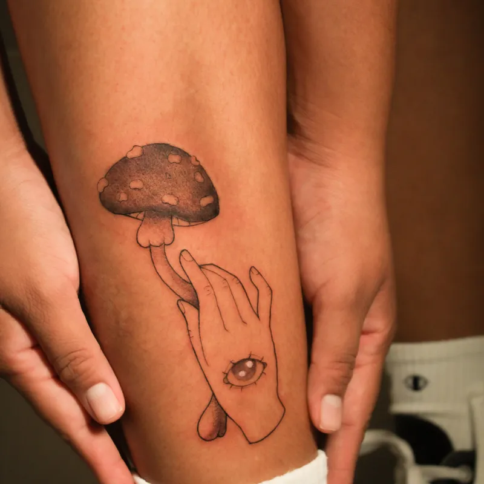
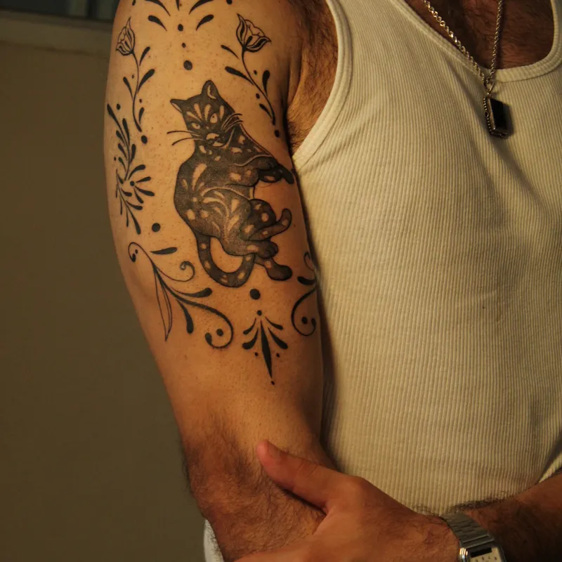
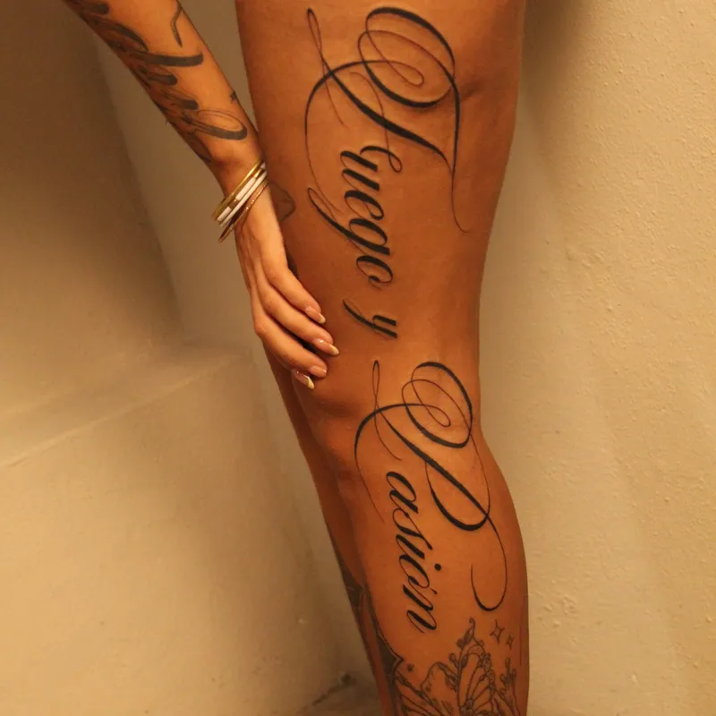
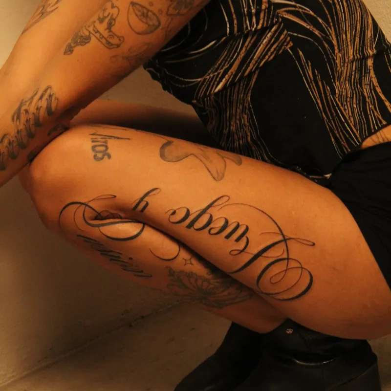
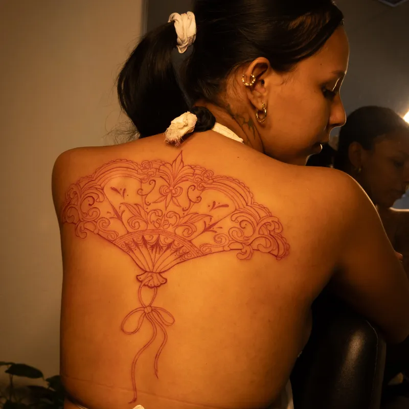
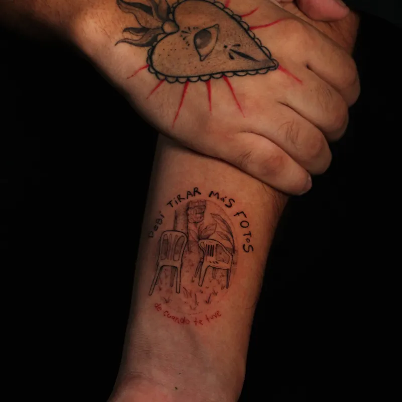
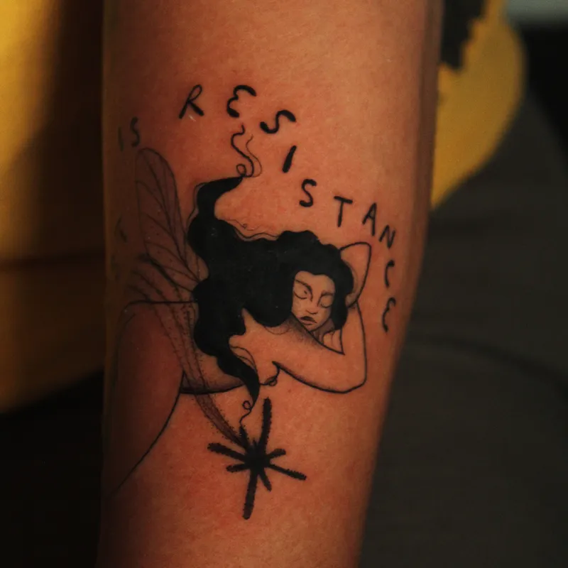
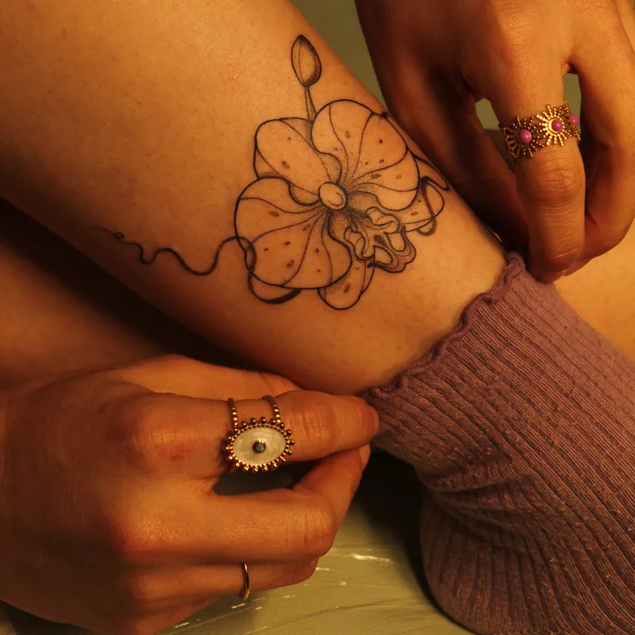
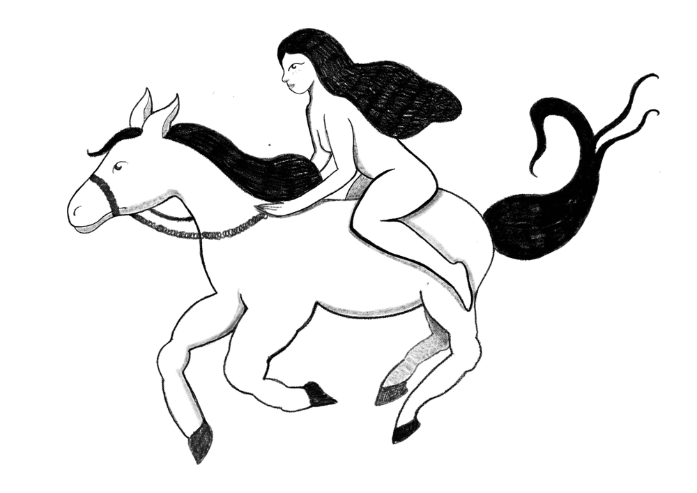
"Tenía mucho miedo de hacerme mi primer tatuaje, pero ella me hizo sentir súper cómoda desde el principio. El resultado fue exactamente lo que quería — incluso mejor."
"Llevaba meses buscando una artista que realmente entendiera el estilo fine-line. La encontré. Mi tatuaje quedó perfecto, tan delicado y preciso."
"Lo que más me gustó fue que me escuchó. No solo copió una referencia — tomó mi idea y la hizo algo único. Ya estoy planeando el siguiente."
Para asegurar el mejor resultado y tu comodidad, por favor considera lo siguiente:
El cuidado en casa es crucial para que tu tatuaje sane perfectamente:
Cuéntame tu idea — por pequeña o grande que sea.
Te mando una cotización personalizada y buscamos la
fecha perfecta para ti.
Con amor y tinta — Una Morra 🌹